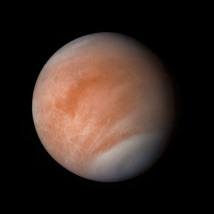
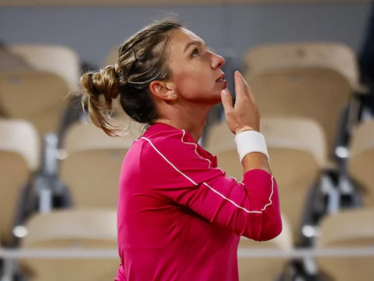
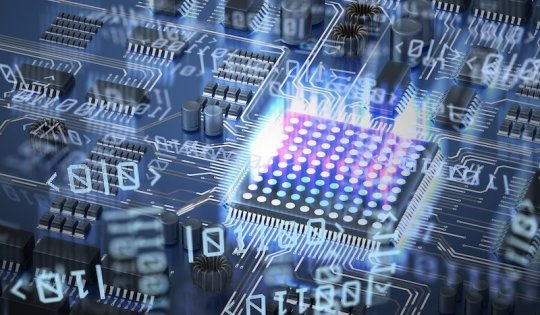
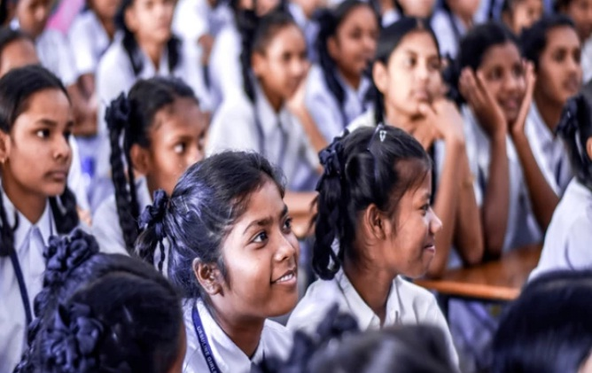
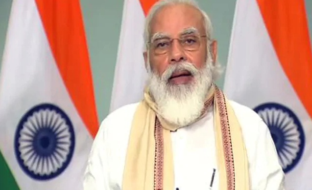
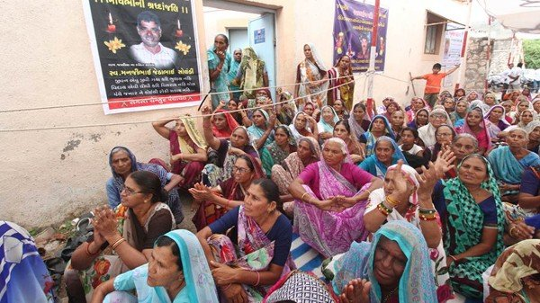
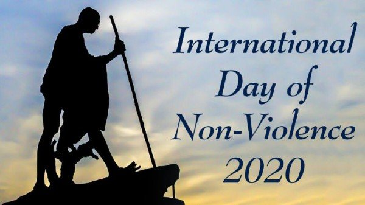
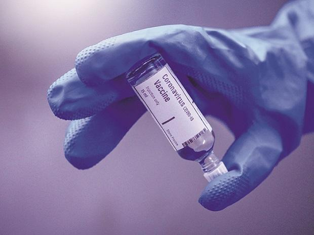

Honda To Withdraw From Formula One At End Of 2021 Season
Honda said Friday it will withdraw from Formula One at the end of the 2021 season as part of the car industry's move away from internal combustion engines. The Red Bull and Alpha Tauri use power units made by the Japanese manufacturer. Honda said it was pursuing "carbon neutrality by 2050" using "future power-unit and energy technologies, including fuel-cell vehicle and battery technologies". Text to Speech

IPL Player Reports Corrupt Approach, BCCI ACU Begins Investigation
A cricketer, competing in the Indian Premier League in the UAE, has "reported a corrupt approach", putting BCCI's anti-corruption unit (ACU) on a high alert. The 13th edition of the IPL in being held in the UAE in a bio-secure environment, which has significantly reduced the chance for persons with dubious credentials approaching the player directly. The threat though still remains by and large due to the online network of corruptors Text to Speech

Possible marker of life spotted on Venus
Astronomers have discovered a rare molecule -- phosphine -- in the clouds of Venus. On Earth, this gas is only made industrially or by microbes that thrive in oxygen-free environments. Astronomers have speculated for decades that high clouds on Venus could offer a home for microbes -- floating free of the scorching surface but needing to tolerate very high acidity. Text to Speech

French Open 2020: Simona Halep Reaches Last-16 At Roland Garros
Simona Halep avenged last year's French Open loss to Amanda Anisimova by thrashing the American teenager 6-0, 6-1 on Friday to reach the last 16 at Roland Garros. Top seed and title favourite Halep extended her career-best winning run to 17 matches and will meet another 19-year-old, Poland's Iga Swiatek, for a place in the quarter-finals. Text to Speech

Cosmic rays may soon stymie quantum computing
Qubits, the logic elements of quantum computers, are coherent two-level systems that represent quantum information. Each qubit has the strange ability to be in a quantum superposition, carrying aspects of both states simultaneously, enabling a quantum version of parallel computation. Quantum computers, if they can be scaled to accommodate many qubits on one processor, could be dizzyingly faster. Text to Speech

New Education Policy Connected With The Roots Of India
the national president of Bharatiya Janata Party (BJP), on Tuesday said that the new National Education Policy, 2020 (NEP) formulated under the leadership of Prime Minister Narendra Modi is attached to the roots of Indian culture and incorporates the views of everyone. Speaking through video conferencing at the fourth convocation ceremony of Pratap University in Jaipur, Mr Nadda said: "The new education policy that Prime Minister has formulated is connected with the roots of India. Text to Speech

New Education Policy Will Play Key Role In Creating "Atmanirbhar Bharat"
Prime Minister Narendra Modi said today the new National Education Policy (NEP) announced by his government will play a key role in creating a self-reliant India and open up the education sector for facilitating greater global exposure for Indian students. PM modi said holistic knowledge, of which science is an integral part, is the answer to all problems. Text to Speech

AYUSH Minister Inaugurates Tribal Unit of NIN at Gohe Budruk in Pune
The Union Minister of AYUSH Shri Shripad Yesso Naik virtually inaugurated the new unit of National Institute of Naturopathy (NIN) to serve the tribal population at Gohe Budruk in Pune, Maharashtra. Text to Speech

NCRB states Crime against SC, ST saw a rise of 7 percent and 26 percent in 2019 yr
National Crime Records Bureau (NCRB) launched the annual Crime in India 2019 report on 30 September. The report stated that the Crime against Scheduled Castes (SCs) and Scheduled Tribes (STs) has increased to over 7% and 26% respectively in 2019 when compared to 2018. Highlights: ♦ As per the report, a total of 45,935 cases were registered for committing a crime against SCs against 42,793 cases were recorded in 2018, which shows an increase of 7.3% in 2019. Text to Speech

International Day of Non-Violence is observed on 2 October
nternational Day of Non-Violence is annually observed on 2 October every year. International Day of Non-Violence 2020 is observed on the birthday of Mahatma Gandhi, who was a great leader of the Indian independence movement. Gandhi was a pioneer of the philosophy and non-violence strategy. Text to Speech
